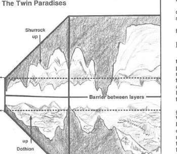

双子天堂 · Twin Paradises
双子天堂由两层相对的世界组成：舒洛克（Shurrock）是山地、寒冷、牧场与挑战之地；多西恩（Dothion）是农田、森林、温和天气与丰收之地。两层之间隔着巨大的空气裂谷，旅行者可以沿壁攀爬、飞行或使用门户穿越。
门户通常位于层的边缘和山谷中。双子天堂的居民勤劳、善良而重视社区；舒洛克适合战士、猎人和牧民，多西恩适合农夫、工匠、吟游诗人和寻求休息的旅行者。力量、智慧与善意往往比财富更容易在这里获得帮助。

双子天堂由两层相对的世界组成：舒洛克（Shurrock）是山地、寒冷、牧场与挑战之地；多西恩（Dothion）是农田、森林、温和天气与丰收之地。两层之间隔着巨大的空气裂谷，旅行者可以沿壁攀爬、飞行或使用门户穿越。
门户通常位于层的边缘和山谷中。双子天堂的居民勤劳、善良而重视社区；舒洛克适合战士、猎人和牧民，多西恩适合农夫、工匠、吟游诗人和寻求休息的旅行者。力量、智慧与善意往往比财富更容易在这里获得帮助。
